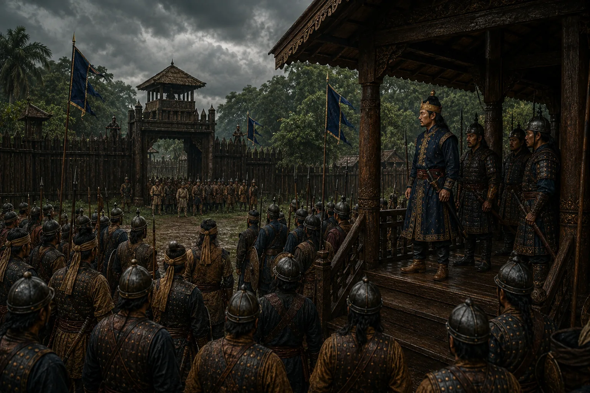

The Royal Army Deserts Sujinphaa
1677 · Six kings in nine years

When Sujinphaa attempts an armed ambush against the Burhagohain, royal soldiers refuse to strike their beloved prime minister and desert the king.
Sources have not yet been catalogued for this record.
People: Atan Burhagohain, Sujinphaa (Arjun Konwar)
Open this scene in the interactive archive · Follow this event on MAP